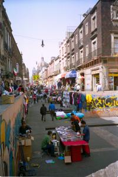
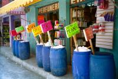

|
Jeudi 8 novembre
On a un peu de mal avec le décalage horaire. A 5H00, on est réveillé. Du coup,
on peut profiter de notre superbe chambre: moquette, télé avec le câble, radio
folklo, eau chaude!!! Le grand luxe quoi. Mais c'est aussi cher, 160 pesos soit
environ 130 FF. Et c'est une des moins chères. Pour le petit déj, on cherche
un truc simple et on se retrouve à manger des tacos! Ca commence fort! Pas trop
épicés c'est vrai mais quand même, des tacos! De toute façon il semble que pour
manger des salades et autres trucs légers, il va falloir se les faire nous-mêmes.
On part découvrir la ville. La première chose qui nous frappe, c'est qu'il
y a un policier tous les 2 mètres, armé et avec gilet pare-balles. Très encourageant...
Mais la ville est très vivante et on les oublie vite. Derrière le Zocalo, la
place centrale de taille respectable mais malheureusement sans bancs publics,
on s'enfonce dans les marchés plus ou moins légaux. Les rues sont pleines de
boutiques ambulantes, de vendeurs de tout, de CDs, d'habits, de poupées, d'artisanat.
Et des tonneaux de crème "type nivéa" ou "type ponds" comme ils disent, qu'ils
servent au kilo... Certaines de ces crèmes ont des couleurs peu engageantes.
Il y a aussi des épices, de délicieux jus d'oranges, un nombre incroyable de
CDs de musique ou de logiciels piratés, etc. Pas mal de misère aussi. Toutes
les 5 minutes, on se fait bousculer par le vendeur de tissus avec son diable
surcharché qui court pour livrer sa marchandise ou par une voiture qui tente
de passer par cette rue dirigée par les forts coups de sifflet du policier.
Soudain, un jeune homme arrive en sifflant, c'est le signal du départ. Tous
les vendeurs d'habits se lancent avec ardeur et bonne humeur dans une course
effrenée dans la rue en poussant les portants lourds de vêtements devant eux,
les stands disparaissent comme par enchantement, les marchandises se volatilisent,
parfois dans les coffre de coccinelles pleines à craquer, ça ne ferme même plus
et il faut s'assoir dessus parfois pour maintenir le capot fermé. Seules les
boutiques autorisées ne s'affolent pas. C'est une descente de police. Mais pas
n'importe laquelle, celle des vendeurs non autorisés, car des policiers, il
y en a quand même partout, il y a même un commissiarat à 3 mètres desdits vendeurs,
masi ceux-là, on dirait qu'ils ne sont pas habilités à verbaliser ou qu'ils
n'en ont pas envie. Dix minutes après, l'alerte est passée et chacun revient,
un large sourire de contentement et d'excitation aux lèvres. On dirait que ce
n'est pas si efficace que ça, même si on a vu un article dans le journal vantant
le travail du gouvernement dans ce domaine...
Ce soir, on fête Mexico avec une cerveza locale, la Corona et... des tacos
bien sûr.
Vendredi 9 novembre
Hier on a vu plein de mariachis, ces musiciens qui chantent la sérénade au
son des guitares, violons et trompettes. Fiers dans leur pantalon ajusté, à
la couture ornée d'or ou d'argent et dans leur veste courte noire également.
Presque tous portent une petite moustache à la Zorro et, bien entendu, un chapeau
(qui n'est pas un immense sombrero d'ailleurs). On dirait qu'ils sortent d'une
comédie musicale.
Aujourd'hui, on va dans un quartier différent: celui des affaires. Partout
de dressent de modernes tours en verre mais la balade restent sympathique grâce
aux très nombreuses rues piétonnes qui relient entre elles les grandes avenues.
C'est sans doute là que viennent manger les "bosseurs" des tours. On a décidé
de s'épargner 22 heures de bus et de prendre l'avion pour Mérida. Ce sera moins
fatiguant et puis, ça nous fera gagner un jour de plage...
Suite du voyage : Uxmal
|

Mexique
Mexico
|

Mexique
Mexico
|
Mexique
Mexico
|
|
|